First Person Exploration Kit: Creating a Door
Overview
There are 3 main types of door included with this asset. They are: Sliding, Always Swing Out, and Complex Swinging. You can also create your own type by extending the FPEDoor class.
Table of Contents
Included Example Doors
| Template Type (FPEDoor.cs) | This is the parent class from which all other doors are derived. It houses some common variables and functions. |
| Sliding Door (FPESlidingDoor.cs) | This door slides. These kinds of doors are really convenient sometimes, because it's really hard for the player to get in the way. Common applications are automatic double doors, and pocket sliding doors. See demoManualSlidingDoor.prefab and demoDoubleAutomaticSlidingDoor.prefab for example use. |
| Always Swing Out Door (FPEAlwaysSwingOutDoor.cs) | This door swings, but always swings out away from the player. These are the best kind of doors, because they are easy to configure and easy to use for players. Real doors don't usually work this way, but sometimes realism isn't that important. See demoAlwaysSwingOutDoor.prefab for example use. |
| Complex Swinging Door (FPESwingingDoor.cs) | This door always swings, but does so in a realistic manner. They simulate "directional inswing". They are also setup to automatically move the player to a special "safe zone" where the door won't hit them. When opening toward the player, a micro "cutscene" plays, panning the cammera toward to door latch. These doors are recommended for advanced users or simulation-oriented applications. See demoDoorLeftHandInSwing.prefab and demoDoorRightHandInSwing.prefab for example use. |
Common Door Components
All doors have a similar set of parts that behave in slightly different ways.
| Door Mesh | This is the visible "door bit" that blocks a doorway. Some doors swing this part, others slide it out of the way. |
| Door Handle Mesh(es) | The part of the door the player looks at when interacting with the door. |
| Swinging or Sliding Part | This houses all the moving parts of any door (such as the door mesh, door handle(s), and other objects) |
| Door Handle Interaction(s) (uses FPEInteractableActivateScript component) | These are the Activation type objects that allow the player to open and close the door. It's a good idea to align these with the visible door handle mesh(es), and perhaps make them even larger. |
| Hit Helpers (uses FPEDoorAndDrawerHitHelper component) | Optional child objects that are used to detect when a door should stop. |
| Player Interaction Zones | Optional child transforms that designate specific spots for custom actions. Mostly used to detect which side of the door the player is closest too and where to move them, if desired. |
Note: Most of the time, you want the Box Collider of your DoorHandle Activation objects to be a trigger. This will prevent it from colliding with other objects.
All doors have a shared set of Inspector Fields, as well as their own for custom behaviour.
| Start Internally Locked | If true, this means the door will start internally locked, and require specificed inventory item to act as a key to unlock it. |
| Required Key Type | The type of inventory item required to unlock an internally locked door. |
| Start Externally Locked | If true, the door will start externally locked. This means an external object such as a security system will need to unlock it before it can be opened. |
| Start Opened | If true, the door will start in an Open state. You will also need to visually move the sliding or swinging part of the door to reflect this state. Good for cases where you want a door to be opened a little already to guide the player or come across a little spooky or something. |
| Stop If Door Hits Something | If true, the door will use its Hit Helpers to stop when it hits another object such as the player or blocking physics object like a Pickup. |
| Door Handle Interaction Text Overrides | These interaction strings are assigned to the door handle(s) when different actions take place. |
| Play Sounds | If true, your door will make sounds during various actions and events. |
| Door Sounds | These are the various sound banks that will be used to make sound effects if Play Sounds is true. |
See the various types below.
Sliding Doors
This asset comes with some example Sliding Door prefabs: demoManualSlidingDoor, demoManualSlidingDoor_Locked, and demoDoubleAutomaticSlidingDoor. To use them, simply drag them into your scene. If using the _Locked variant, ensure the player has access to the required key (default is demoSimpleKey.prefab). If using the _ExternallyLocked variant, ensure there is something such as the demoSecuritySystem prefab included so that the door can be externally unlocked. Run the scene and use the doors. You're done.
To create a customized Sliding Door from scratch, follow these steps:
- Create a new scene, and add a Plane at (0,0,0), and an FPECore object.
- Create an empty GameObject, name it MyCustomSlidingDoor
- Add the FPESlidingDoor component. This will add come child objects: SlidingPart, and SlidingPart\DoorHandle
- Create an empty child of SlidingPart at (0,0,0), name it DoorMesh.
- Add a child mesh to DoorMesh, such as the included Door_C.fbx, and rotate it as required so that it aligns with the gizmos
- Add a child mesh to DoorHandle, such as the included DoorHandle_Pocket.fbx, ensure it is at (0,0,0) and rotate it as required.
- Your door should now look like this:
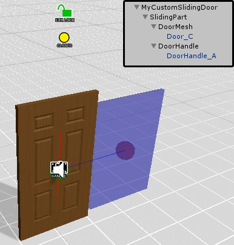
- Add a Box Collider to the SlidingPart object, and size it accordingly. It should be just a tiny bit bigger than the main door mesh.
- Select the DoorHandle object, and set the Event Fire Type to EVERYTIME, then assign the activateDoor() function of your custom door to its Activation event.
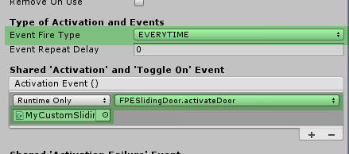
- Run your scene, and open the door by interacting with the door handle. The door should now slowly slide open and closed when activated.
- Move the door handle to the left side of the door where you want it, and make the DoorHandle object smaller as desired. Also set its Box Collider to be a Trigger.
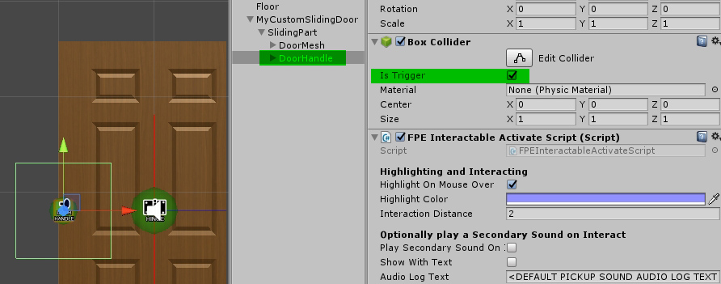
- To make the door stop when it hits something, create another child object of SlidingPart and name it HitHelper.
- Add a Box Collider to HitHelper, and then add an FPEDoorAndDrawerHitHelper component.
- Scale the HitHelper object so that the yellow gizmo outline is about the same size as the door mesh, but a little thicker. Also make it stick out of the left side of the door a little.
- On the main MyCustomSlidingDoor object, check the "Stop if door hits something" checkbox.
- Run your scene again, and open the door. Now stand near the left side of the door and close the door. It should stop when it hits the player. If it doesn't, check the steps above, and try making it stick out a little more to the left. See demoManualSlidingDoor.prefab for reference.
- To make the door be locked, simply check the Start Internally Locked checkbox and set the required key type (e.g. SIMPLEKEY)
- Add a demoSimpleKey to your scene. Run the scene again, and test out the door. You now need to unlock it with the key in order for the door to open.
- If you want your door to make sounds, assign sound banks to the "Door Sounds" fields in the inspector. The included sound banks are in \Sounds\Soundbanks\DoorsAndDrawers\ folder.
- You're all done! If you want, you can further customize the fields in "Door-Specific Behaviour" section of the inspector, then save your new door as a prefab.
Note: In order for saving and loading to work correctly, your doors have to have unique names within a scene. If using a prefab, having two doors be named "MyCustomSlidingDoor" and "MyCustomSlidingDoor (1)" is perfectly fine! :)
Always Swing Out Doors
This asset comes with some example Always Swing Out Door prefabs: demoAlwaysSwingOutDoor, demoAlwaysSwingOutDoor_ExternallyLocked, and demoAlwaysSwingOutDoor_Locked. To use them, simply drag them into your scene. If using the _Locked variant, ensure the player has access to the required key (default is demoSimpleKey.prefab). If using the _ExternallyLocked variant, ensure there is something such as the demoSecuritySystem prefab included so that the door can be externally unlocked. Run the scene and use the doors. You're done.
To create a customized Always Swing Out Door from scratch, follow these steps:
- Create a new scene, and add a Plane at (0,0,0), and an FPECore object.
- Create an empty GameObject, name it MyCustomAlwaysSwingOutDoor
- Add the FPEAlwaysSwingOutDoor component. This will add come child objects: SwingingPart, SwingingPart\DoorHandle, PlayerInteractionZones\LeftHandSide, and PlayerInteractionZones\RightHandSide
- Create an empty child of SwingingPart at (0,0,0), name it DoorMesh.
- Add a child mesh to DoorMesh, such as the included Door_C.fbx, and rotate it as required so that it aligns with the gizmos
- Position the mesh so that it is centered vertically about the red gizmo as shown below, and a little bit away from it. Since Always Swing Out doors swing on a sort of imaginary hinge, we'll need to do some visual fiddling a little later on.
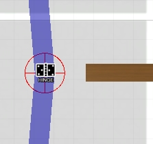
- Add a child mesh to DoorHandle, such as the included DoorHandle_A.fbx, ensure it is at (0,0,0) and rotate it as required. Duplicate it, and rotate the duplicate 180 degrees so that there are handles on both sides of the door. Move the entire DoorHandle object so that it is at the end of the door opposite the red hinge gizmo.
- Your door should now look like this:
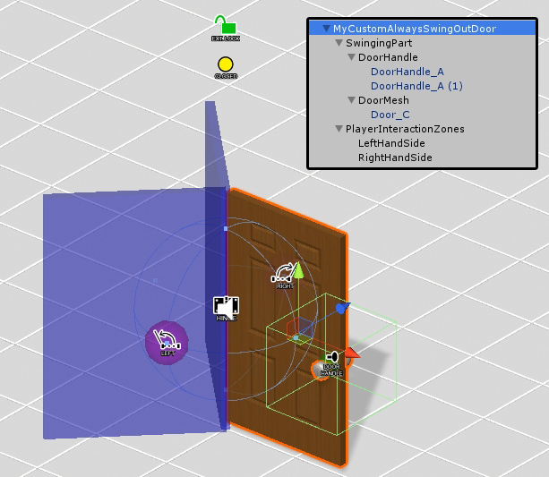
- Add a Box Collider to the SwingingPart object, and size it accordingly. It should be just a tiny bit bigger than the main door mesh.
- Select the DoorHandle object, and set the Event Fire Type to EVERYTIME, then assign the activateDoor() function of your custom door to its Activation event.
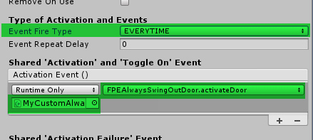
- Run your scene, and open the door by interacting with the door handle. The door should now slowly swing open and closed when activated.
- Move the door handle(s) to the right side of the door where you want it, and make the DoorHandle object smaller as desired. Also set its Box Collider to be a Trigger.
- To make the door stop when it hits something, create another two child object of SwingingPart and name them HitHelperLeft and HitHelperRight.
- Add a Box Collider and then add an FPEDoorAndDrawerHitHelper component to both HitHelperLeft and HitHelperRight.
- Scale the Hit Helper objects so that the yellow gizmo outline is about the same size as the door mesh. Also make it stick out of the right side of the door a little.
- Position HitHelperLeft lower in Z axis toward the PlayerInteractionZones\LeftHandSide object's side of the door. Do the opposite with HitHelperRight.
- On the main MyCustomAlwaysSwingOutDoor object, check the "Stop if door hits something" checkbox.
- Then, position both the PlayerInteractionZones\LeftHandSide and PlayerInteractionZones\RightHandSide objects so they are closer to the door handle.
- Your door should now look like this:
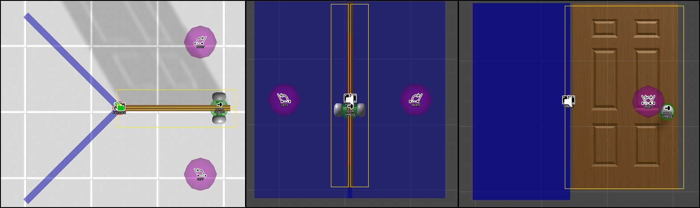
- Run your scene again, and open the door. Now stand near the left-center side of the door and close the door. It should stop when it hits the player. If it doesn't, check the steps above, and experiment with the size and position of the Hit Helper objects, making them stick out a little more. See demoAlwaysSwingOutDoor.prefab for reference.
- To make the door be locked, simply check the Start Internally Locked checkbox and set the required key type (e.g. SIMPLEKEY)
- Add a demoSimpleKey to your scene. Run the scene again, and test out the door. You now need to unlock it with the key in order for the door to open.
- If you want your door to make sounds, assign sound banks to the "Door Sounds" fields in the inspector. The included sound banks are in \Sounds\Soundbanks\DoorsAndDrawers\ folder.
- Finally, you may want to hide the visible crack in the door where the hinges should go. Normally there are hinges here, but this always swing out door sort of breaks the rules of real doors a little.
- Add a child Quad 3D Object to SwingingPart called "GapHider" and Assign a material such as the included DoorGapHider_A.mat
- Remove the MeshCollider component, then scale the position the quad so it covers the crack in the door. You want to have the textured side face the opposite side of the door from its own position.
- Once in place, duplicate GapHider and rotate it about the Y-Axis 180 degrees, and move it to the opposite side of the door.
- Now when the door swings open, the gap from the missing traditional hinge will be covered up and way less noticeable. See demoAlwaysSwingOutDoor.prefab for further reference.
- You're all done! If you want, you can further customize the fields in "Door-Specific Behaviour" section of the inspector, then save your new door as a prefab.
Note: In order for saving and loading to work correctly, your doors have to have unique names within a scene. If using a prefab, having two doors be named "MyCustomAlwaysSwingOutDoor" and "MyCustomAlwaysSwingOutDoor (1)" is perfectly fine! :)
Complex Swinging Doors
This asset comes with some example Complex Swinging Door prefabs: demoDoorLeftHandInSwing, demoDoorRightHandInSwing, and demoDoorRightHandInSwing_Locked. To use them, simply drag them into your scene. If using the _Locked variant, ensure the player has access to the required key (default is demoSimpleKey.prefab). You're done.
To create a customized Complex Swinging Door (in this case, a Right-Hand Inswing Door) from scratch, follow these steps:
Note: Setting up one of these doors can be tedious. These types of doors are recommended for advanced users or simulation-oriented applications only.
- Create a new scene, and add a Plane at (0,0,0), and an FPECore object.
- Create an empty GameObject, name it MyCustomRightHandInswingDoor
- Add the FPESwingingDoor component. This will add come child objects:
- SwingingPart
- SwingingPart\DoorHandle
- PlayerInteractionZones\SwingInSide
- PlayerInteractionZones\SwingOutSide
- PlayerInteractionZones\SafeZoneSwingIn: This is where the player is moved when the door swings in
- PlayerInteractionZones\SafeZoneSwingOut: This is where the player is moved when the door swings out
- PlayerInteractionZones\DoorActionLookTarget: This will serve as the camera movement look target when the door is opened and closed.
- Create an empty child of SwingingPart at (0,0,0), name it DoorMesh.
- Position the mesh so that it is centered vertically about the red gizmo as shown below, and a little bit away from it. You want the very corner of the door to be horizontally at the door hinge pivot as shown below. The door will swing about the red hinge pivot positon around to the blue box.
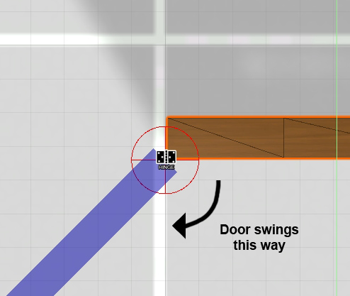
- Position the DoorHandle object to the side opposite the red hinge gizmo. Scale it and position it so that it only covers one side of the door.
- Add a child mesh to DoorHandle, such as the included DoorHandle_A.fbx, ensure it is at (0,0,0) and rotate it as required.
- Duplicate DoorHandle object, and rotate the it 180 degrees so that there are handles on both sides of the door.
- Make the Box Collider of both DoorHandle objects be Triggers.
- Your door should now look like this:
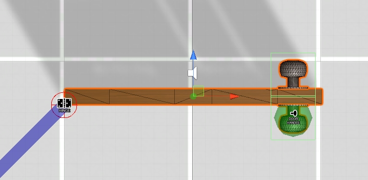
- Add a Box Collider to the SwingingPart object, and size it accordingly. It should be just a tiny bit bigger than the main door mesh.
- Select the DoorHandle objects, and set the Event Fire Type to EVERYTIME, then assign the activateDoor() function of your custom door to their respective Activation events.
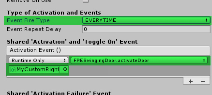
- Run your scene, and open the door by interacting with the door handle. The door should now slowly swing open and closed when activated.
- To make the door stop when it hits something, create another two child object of SwingingPart and name them HitHelperOpen and HitHelperClose.
- Add a Box Collider and then add an FPEDoorAndDrawerHitHelper component to both HitHelperOpen and HitHelperClose.
- Scale the Hit Helper objects so that the yellow gizmo outline is about the same size as the door mesh. Also make it stick out of the right side of the door a little.
- Position HitHelperOpen lower in Z axis toward the PlayerInteractionZones\SwingOutSide object's side of the door. Do the opposite with HitHelperClose.
- On the main MyCustomAlwaysSwingOutDoor object, check the "Stop if door hits something" checkbox.
- Run your scene again and open the door. If the door hits the player, try making the Hit Helper objects slightly less than the width of the door.
- Your door should now look like this:
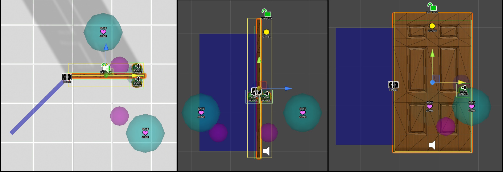
- You probably want to test out the door a little bit to make sure it feels good. The "SafeZoneSwingIn/Out" objects designate where the player is automatically moved to when the "Auto Move Player To Safe Zones" checkbox is checked. If these are in a less than ideal spot, the player might seem like they are getting bumped around in a jarring way during door operation. Re-position the safe zones and try the door until you're happy with it. You can also refer to demoDoorRightHandInSwing.prefab for reference positions of the safe zone and look target positions.
- To make the door be locked, simply check the Start Internally Locked checkbox and set the required key type (e.g. SIMPLEKEY)
- Add a demoSimpleKey to your scene. Run the scene again, and test out the door. You now need to unlock it with the key in order for the door to open.
- If you want your door to make sounds, assign sound banks to the "Door Sounds" fields in the inspector. The included sound banks are in \Sounds\Soundbanks\DoorsAndDrawers\ folder.
- You're all done! If you want, you can further customize the fields in "Door-Specific Behaviour" section of the inspector, then save your new door as a prefab.
Note: In order for saving and loading to work correctly, your doors have to have unique names within a scene. If using a prefab, having two doors be named "MyCustomRightHandInswingDoor" and "MyCustomRightHandInswingDoor (1)" is perfectly fine! :)
Door Jambs
You probably want your doors to have door jambs. To add a door jamb, you can create a child object of any door, and name it Jamb. Then add a child mesh (such as the included Doorjamb_A.fbx or DoorJamb_Pocket.fbx), and position it accordingly. Please refer to the included demo door prefabs for more details on positioning the jambs most effectively.
External Locks
When you want any door to start locked from an external source (e.g. security system), you must check the "Start Externally Locked" checkbox in the Inspector. Most importantly, you must also include another object such as the included demoSecuritySystem prefab, and assign it to unlock your door. Externally locked doors can only be unlocked from External systems. Otherwise, they will be locked forever! :)
Door Angles and Positions
Always Swing Out and Complex Swinging Doors use a swing angle to determine how far they should swing out. The blue gizmo will show you a representation of the door's open position for visual reference. Below is an image showing the difference between 95 degrees (default) and 135 degrees for an Always Swing Out Door.
Note: Sliding doors have a "Closed Position" such that SlidingPart's X position relative to the parent Door object is zero. Similarly, Swinging doors of both types have a "Closed Rotation" such that the SwingingPart's Y rotation relative to the parent Door object is zero. These positions are created at runtime automatically and need to be adhered to.
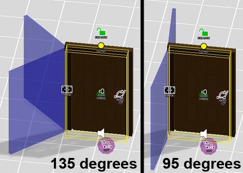
When creating a Complex Swinging Door, the swing angle must align to the directionality of the door. Left-Hand Inswing must have a negative swing angle, and Right-Hand Inswing must have a positive swing angle. "Directional Inswing" means that a door of this type can never swing past zero degrees. That's why there is both right and left hand inswing doors! :)